Deposits
Payments made through the POS or Claims systems from multiple sources can be combined together to record a single Deposit that will match what was actually deposited at the bank. The payment amounts will then be transferred from the Undeposited Funds account to whichever Bank account is chosen. Select the Deposits tab under the Centers - Billing link.

- Under Available Payments, select the desired Date Range and click the Refresh Payments button to generate a list of available payments to be included in the deposit. The list is sorted by date and will include the following payments that have not been included in a previous deposit.
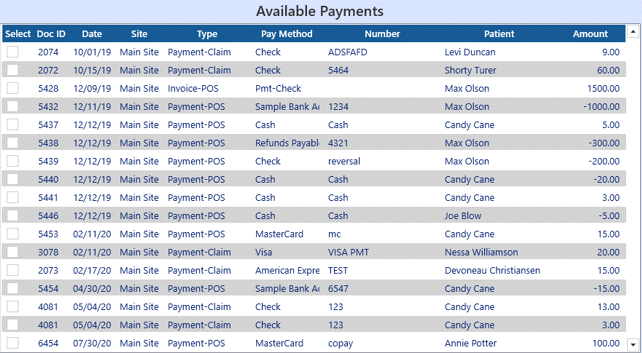
- Finalized, non-voided POS payments and payment reversals/refunds
- Payment line items included on Finalized, non-voided POS invoices or credit memos
- Claim payments and payment reversals
- Select individual payments to add to the deposit. You can also click the Select/Unselect ALL button.
- As payments are selected, they will appear to the right in the Selected Documents section.
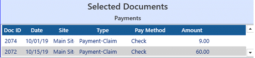
- You can add any needed adjustments (positive or negative) to the deposit by clicking the Add New icon
 next to Charges and Adjustments.
next to Charges and Adjustments.
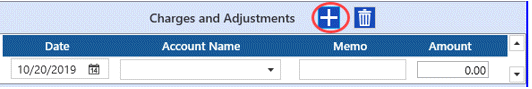
- Choose the account for the adjustment, enter a Memo if desired, and the amount. If the adjustment is reducing the amount of the deposit, and the amount as a negative.
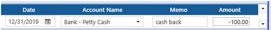
- If you've add the adjustment in error, highlight the line and click the Delete icon
 to remove it.
to remove it.
- When all payments to be included have been selected, in the Command section:
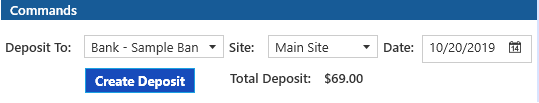
- Select the desired Bank Account if there is more than one choice.
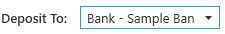
- Select the Site for the deposit.
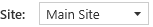
- Select or enter the date of the deposit.
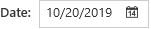
- Click the Create Deposit button.
- The newly added deposit will appear in the Deposits section. Click on the line to select it.
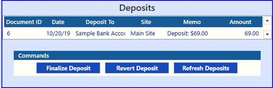
- If the deposit amount and details look correct, click the Finalize Deposit button.
- A confirmation message will popup, click Yes to continue or No to cancel.
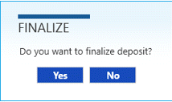
- If something is not correct and you wish to clear the deposit and start over, click the Revert Deposit button.
Payments will be removed from the deposit so that you can create a new one.
- If you exit TIMS before finalizing a deposit, when you return you can click the Refresh Deposits button to display the previous open deposit.
- The Deposit Detail Report shows a listing of all the payments that make up each deposit. It can be accessed from the TIMS Reports/Accounts Receivable menu.
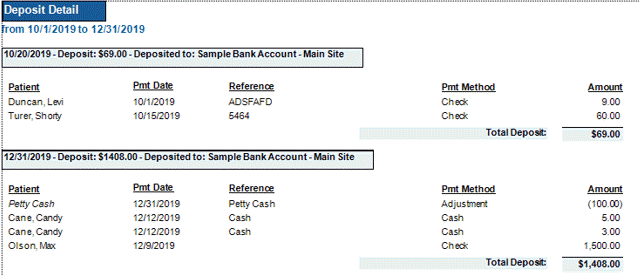